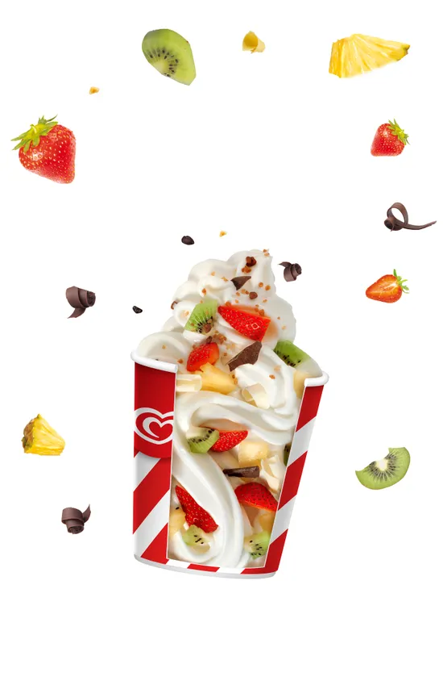

My swirl

Description
Ingredients
Ice Cream Base
- Choose your favorite ice cream flavor (e.g., vanilla, chocolate, strawberry, etc.).
Toppings
- American Cookies
- Oreo Cookies
- Muffins (any flavor you prefer)
- Butterscotch Sauce
- Cinnamon Mix (optional: sprinkle a mix of cinnamon and sugar on top)
Steps:
- Start with a generous swirl of your chosen ice cream flavor as the base.
- Add a layer of American Cookies on top of the ice cream.
- Crush some Oreo Cookies and sprinkle them over the cookies layer.
- Cut the muffins into small pieces and place them on the ice cream.
- Drizzle the butterscotch sauce over the entire mixture.
- (Optional) If you enjoy the warm and cozy flavor of cinnamon, sprinkle a mix of cinnamon and sugar over the top.
- (Optional) For a tangy twist, add a scoop of frozen yogurt on top.
- Grab a spoon and enjoy the magical combination of flavors!
Note: Feel free to customize the toppings according to your taste preferences. You can also add some colorful sprinkles or chocolate chips for extra fun!